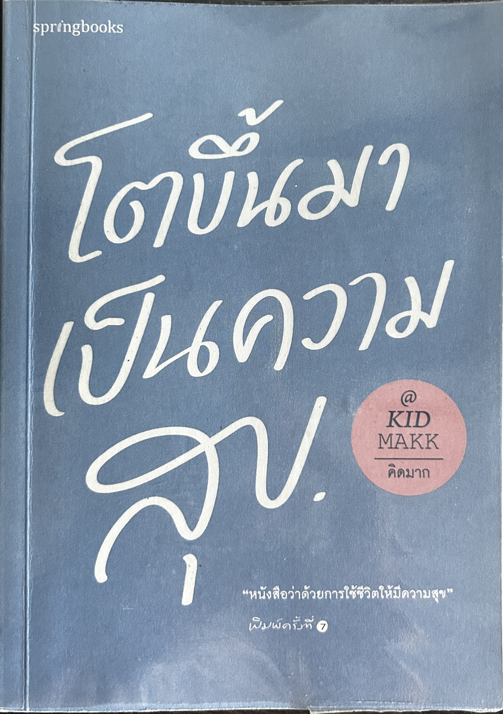
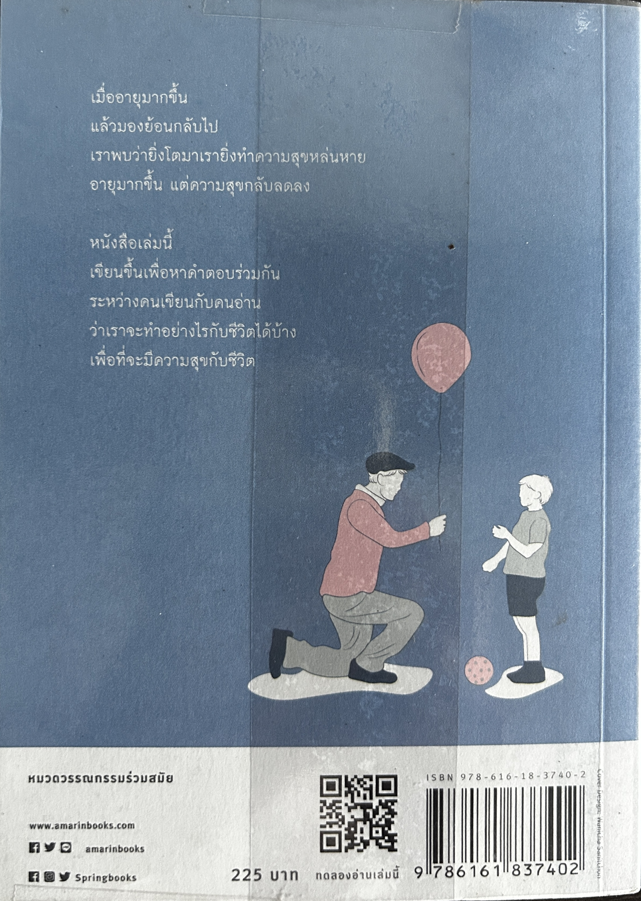

เคยถามตัวเองไหมว่า…
ยิ่งโตขึ้น ทำไมความสุขกลับยิ่งหายยากขึ้น?


สมัยเด็กเรามักถูกถามว่า "โตขึ้นอยากเป็นอะไร" แล้วเราก็รีบตอบชื่ออาชีพที่ใฝ่ฝันอย่างมั่นใจ แต่พอเติบโตขึ้นมาจริงๆ เรากลับพบว่ากำลังทำอาชีพที่ไม่เคยคิดไว้ และกลายเป็นผู้ใหญ่ที่แบกรับความคาดหวังจนเผลอลืมวิธีมีความสุขไป ถึงเวลาหยุดพักเพื่อย้อนทบทวนชีวิตว่า เราจะปรับมุมมองและใช้ชีวิตอย่างไร เพื่อให้เติบโตไปเป็นผู้ใหญ่ที่ไม่หลงลืมตัวตน และ
"โตขึ้นมาเป็นความสุข" ได้ในแบบของเราเอง
เกี่ยวกับหนังสือ
หนังสือ "โตขึ้นมาเป็นความสุข" ผลงานความเรียงฮีลใจจาก คิดมาก นามปากกาขวัญใจคนรุ่นใหม่ จะพาเราไปสำรวจและทบทวนแง่มุมต่างๆ ของชีวิต ทั้งเรื่องความคิด ความรู้สึก การวางตัว และสิ่งที่เรากำลังทำอยู่ในทุกวัน
หนังสือเล่มนี้แบ่งเป็นบทย่อยทั้งหมด 30 บท แต่ละบทจะมีเนื้อหาต่างกันออกไป เนื้อหาของแต่ละบทจะพูดเกี่ยวกับสิ่งที่เราเจอในชีวิต เช่น บทที่1 กล่าวถึงการมีความฝัน บทที่9 กล่าวถึงครอบครัว บทที่23 กล่าวถึงโลกของการทำงาน ในแต่ละบทที่เราได้อ่านจะเป็นสิ่งที่เราเจอได้ในชีวิตจริง การได้อ่านหนังสือเล่มนี้เป็นการฉุกคิดให้กับตัวผู้อ่านว่าในชีวิตเราผ่านอะไรมาบ้าง หลงลืมอะไรไปรึป่าวในชีวิต การอ่านหนังสือเล่มนี้จะทำให้ผู้อ่านได้ลองทบทวนเรื่องต่างๆในชีวิต และ
ได้ลองคิดตามหนังสือเล่มนี้ว่าตัวผู้อ่านจะทำอย่างไรให้โตขึ้นมาเป็นคนที่มีความสุขผ่านทั้ง 30 บทของหนังสือ
บทที่แนะนำให้อ่าน
บทที่5 ไม่มีอะไรที่เราทำไปแล้ว ควรนับเป็นความล้มเหลวในภายหลัง
บทนี้เกี่ยวกับการพูดถึงว่าเราไม่ควรเสียใจกับเรื่องที่เราตัดสินใจหรือทำไปแล้ว เพราะเราทำได้ดีที่สุดในตอนนั้นแล้ว เราจะต้องไม่เอาสิ่งที่เกิดขึ้นในอดีตมาเป็นตัวตัดสินเราในปัจจุบัน เพียงแค่เราต้องเรียนรู้จากสิ่งที่ทำในอดีต
บทที่9 Family First
เมื่อเราโตขึ้น มีหน้าที่การงานมีหลายอย่างให้รับผิดชอบในชีวิตมากขึ้น จนลืมคนที่คอยเป็นห่วงเราและรักเรามากๆ การได้อ่านบทนี้ทำให้เราต้องลองมองย้อนกลับมาที่ตัวเราเองว่าเราได้หลงลืมคนที่รักเราไปหรือไม่ ถ้าเราหลงลืมก็ควรกลับไปหาเขาบ้าง เพราะ เขาคือคนที่รักเรามากที่สุด
บทที่15 อยู่อย่างเย็น
บทนี้ทำให้เราได้ลองถามตัวเองว่าเรานั้นเป็นอุณหภูมิแบบไหนร้อน หรือ เย็น ถ้าเราเป็นคนอุณหภูมิเย็นทุกคนก็อยากอยู่ใกล้ แต่ถ้าเราเป็นคนอุณหภูมิร้อนก็คงไม่มีใครอยากอยู่ใกล้ บทนี้ได้สอนเราให้รู้ว่าเราควรมีสติรู้ว่าเราต้องจัดการตัวเองอย่างไรให้คนรอบข้างและตัวเราเองโอเคที่สุด เพราะ คนทุกคนไม่สามารถร้อนและเย็นได้ตลอดเวลา
บทที่22 เปิดใจเรา เพื่อเปิดใจคนอื่น
ในยุคปัจจุบันคนมักเป็น Introvert ไม่ค่อยกล้าเข้าไปทักทายหรือมีปฏิสัมพันธ์กับผู้อื่นก่อนเนื่องจากกลัวหรือบางคนอาจตัดสินด้วยตัวเองไปแล้วว่าคนนี้คงไม่อยากเป็นเพื่อนกับเรา กลัวว่าคนนี้จะตัดสินเราถ้าเราเข้าไปทักก่อน บทนี้จะสอนเราว่าถ้าเราไม่เปิดใจเราไปหาผู้อื่นก่อนเราอาจจะไม่ได้เจอมิตรภาพที่ดี หรือ ได้ก้าวข้ามผ่านสิ่งที่เราคิดไว้เพราะ สิ่งที่เราคิดอาจไม่ได้เป็นแบบที่เราคิดก็ได้